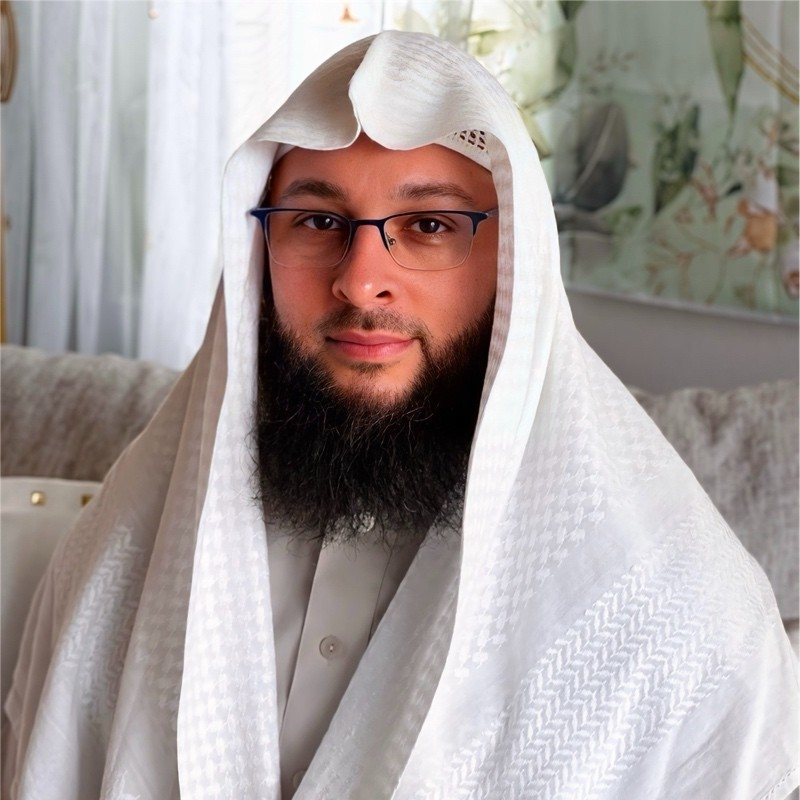

Making things for the web
From a small interaction to a whole website, I enjoy the process of turning an idea into something people can actually use.
A LITTLE CORNER OF THE INTERNET
Always learning.
Better when shared.
I build things for the web, help people grow, and enjoy learning along the way. Welcome to my personal space.
Come on in
I’m Naasir Bush. Software development is a big part of my life, but so are the people I get to learn with and learn from.
My path has taken me through building websites, teaching at Nucamp, and leading frontend teams at Corporate Tools. The common thread? Working through problems together and helping someone take their next step.
I speak English and Arabic, and I’ve kept returning to education myself. Learning something new—and making it a little easier for someone else to understand—is a thread that runs through it all.
This is a place to put a little of that together.
Different parts of my life.
Plenty of overlap.
From a small interaction to a whole website, I enjoy the process of turning an idea into something people can actually use.
Teaching and mentoring have been a meaningful part of my journey. I like breaking down a tricky idea and working through it with someone.
Good conversations, thoughtful feedback, and making space for others to grow. The human part of building things matters to me.
03 / KEEP IN TOUCH
A shared interest, a question, or just passing through?
You’re welcome to reach out.